Introduction
I got invited to present on Blazor .NET8 as part of the [https://mstechsummit.pl/en/](MS Tech Summit Poland (MSTS Summit)), for which I’m very excited and honored. For most of my public speaking engagements, I try to focus on live demos, with only a minimum amount of slides, and this session is no different.
To help my audience in reproducing the demos in their own time, I decided to write out the steps.
This app introduces Blazor .NET8 development, and more specifically how to easily create a Single Page App using HTML, CSS and a bit of C# code. Once the app is live, I expand with data integration features, using Entity Framework and making API calls to an external API Service.
While I’ve been using Blazor .NET for about 3 years now as a hobby project, I feel like I am still learning development with .NET for the first time at age 48. Having succeeded in getting an actual app up-and-running, I wanted to continue sharing my experience, inspiring other readers (and viewers of the MSTS session) to learn coding as well. And maybe becoming a passionate Blazor developer as myself.
Prerequisites
If you want to follow along and building this sample app from scratch, you need a few tools to get started:
- Visual Studio 2022 version 17.9.7 or newer, to develop the application (VSCode or other dev tools will work as well, but I’m not that familiar with those…)
- Community Edition can be downloaded for free here (Visual Studio 2022 Community Edition – Download Latest Free Version (microsoft.com))
- GitHub Account to store the application code in source control
- Sign Up for free here (https://github.com/join)
- Azure Subscription to run Azure App Service web application
- Get a Free Azure Subscription here (https://azure.microsoft.com/en-us/free/)
Deploying your first Blazor Web Assembly app from a template
Visual Studio (and .NET) provide different Blazor templates, both as an “empty template”, as well as one with a functional “sample weather app”, and both options are available for Server and Web Assembly.
With the release of .NET8 last November, the Product Group decided to simplify getting started with Blazor, using the Blazor Web App template. Actually allowing you to decide wether to use WebAssembly, Server or both, in the same project.
- Launch Visual Studio 2022, and select Create New Project
- From the list of templates, select Blazor Web App
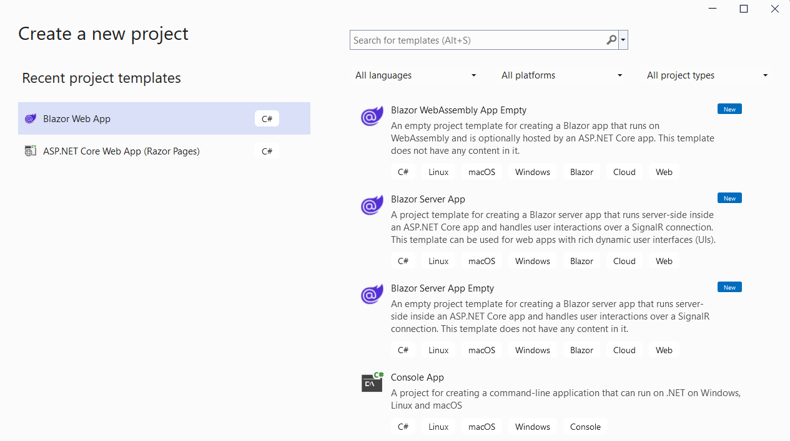
-
Provide a name for the project, e.g. BlazorMSTS, and store it to your local machine’s folder of choice
-
Click Next to continue the project creation wizard
-
Select .NET 8.0 (Long Term Support) as Framework version
-
Select None for authentication type
-
Select Server for Interactive Render Mode
-
Select Per Page/component for Interactivity location
-
Click Create to complete the project creation wizard and wait for the template to get deployed in the Visual Studio development environment. The Solution Explorer looks like below:
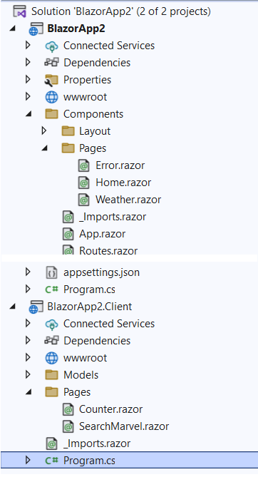
- Run the app by pressing Ctrl-F5 or select Run from the upper menu (the green arrow) and wait for the compile and build phase to complete. The web app should load successfully in a new browser window.
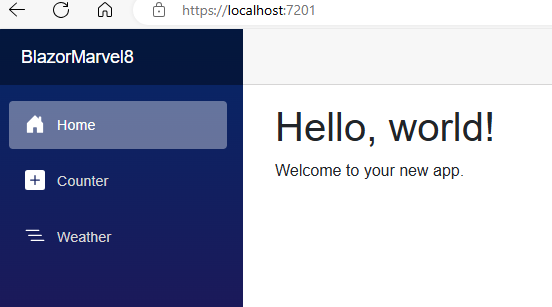
-
Wander around the different parts of the web app to get a bit familiar with the features. With the Blazor Server hosting model, components are executed on the server from within an ASP.NET Core app. UI updates, event handling, and JavaScript calls are handled over a SignalR connection using the WebSockets protocol. The state on the server associated with each connected client is called a circuit. Circuits aren’t tied to a specific network connection and can tolerate temporary network interruptions and attempts by the client to reconnect to the server when the connection is lost.
-
Close the browser, which brings you back into the Visual Studio development environment.
-
This confirms the Blazor Server app is running as expected.
In the next section, you learn how to update the Home.razor page and add your own custom HTML-layout, CSS structure and actual runtime code.
Using the sample app to understand the core of Blazor
In the Blazor running app, navigate to the Counter page by clicking the Counter option in the navigation sidebar to your left. Selecting the Click me button will perform an increment of the current count without a page refresh. Having this kind of interactivity, used to require JavaScript, but with Blazor you can use C# now.
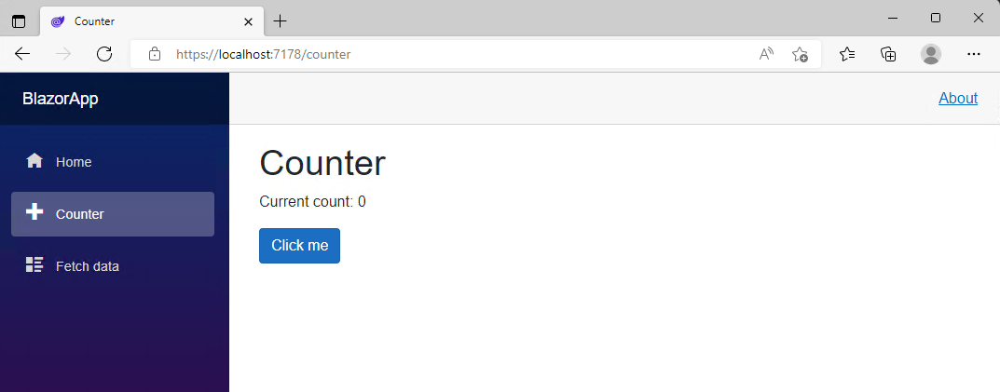
You can find the implementation of the Counter component at Counter.razor file located inside the Components/Pages directory.We talked about Components in our presentation as well. Every razor page, can be a component. Let’s use that in the next example:
Open the Home.razor file in Visual Studio. The Home.razor file already exists, and it could be seen as the replacement for the former index.html or default.asp in previous web applications. It’s located in the Components/Pages folder inside the BlazorApp directory that was created earlier.
Adding the Counter component - coming from the Counter page - to the app’s homepage is possible by adding a
|
|
Running the app again, will now show the Counter component, nicely on the Home Page. How easy, yet cool is that? DevOps engineers would call this minimizing technical debt, as instead of reusing and duplicating code, you can now just reuse full components.
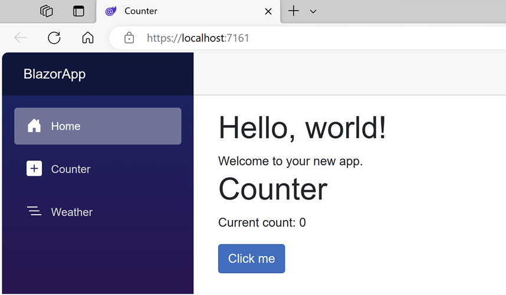
Updating the template with your custom code
Blazor allows you to combine web page layout code (Razor pages), basically HTML and CSS, together with actual application source code (C# DotNet), in the same razor files. I can’t compare it with previous development environments, but it seems to be one of the great things about Blazor – and I really like it, since it’s somewhat simplifying the structure of your application source code itself.
Traditionally, this means creating the necessary HTML and CSS layout, followed by writing the Code-piece. Little bit what we talked about with the Counter.Razor page.
Most Web Apps rely or provide some sort of Data back-end, to allow users to pull up information, or maybe creating and editing new information into a database. in .NET, this usually gets done by Entity Framework, allowing interaction with different kinds of databases, such as SQL Server, but also Azure SQL, Azure Cosmos DB as well as non-Microsoft scenarios such as Oracle or Postgresql and others.
The cool thing is, Visual Studio provides a Scaffolding Wizard for Entity Framework, which automates a big part of the process of creating web page entry form, as well as the different CRUD (Create, Read, Update, Delete) operations - both the layout, as well as the logical coding piece behind the different action buttons, is getting created.
Let’s check out what that looks like.
Using DotNet Entity Framework Scaffolding for Razor/Blazor
- The starting point for any data content interaction in a web app, starts with a data model. This is a C#-class, which contains the structure of the actual data you want to use. In this example, let’s consider working with Conference Data, such as a Conference Session Title, a Speaker, Session abstract, Technical Domain, Session duration, etc…
A basic model class could look like this:
|
|
- In the Blazor Project folder Components, create a new subfolder “Data”, and create a file ConferenceSession.cs, in which you copy the above sample content.
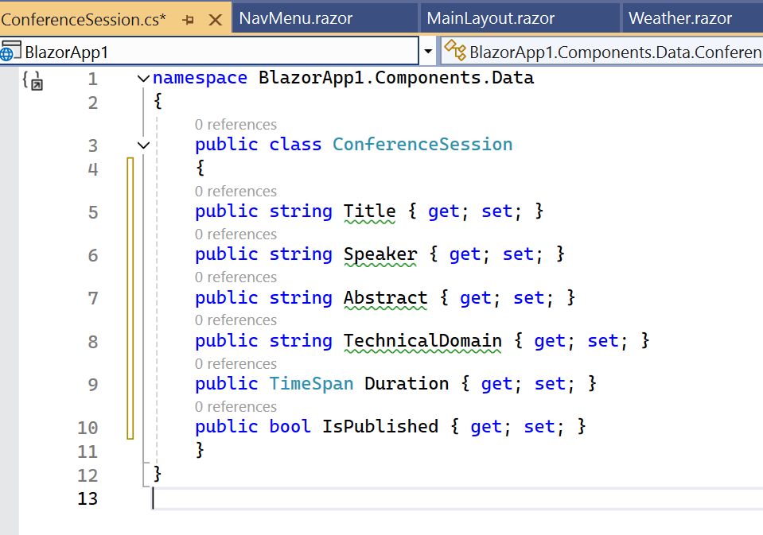
- With the Class Model in place, you can now make use of the Scaffolding wizard. From the Project, right-click, and select Add New Scaffolded Item
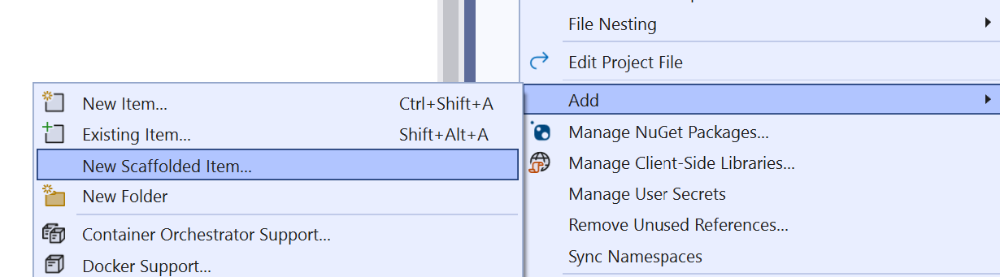
- From the list of options, select Razor Component and Razor Components Using Entity Framework (CRUD)
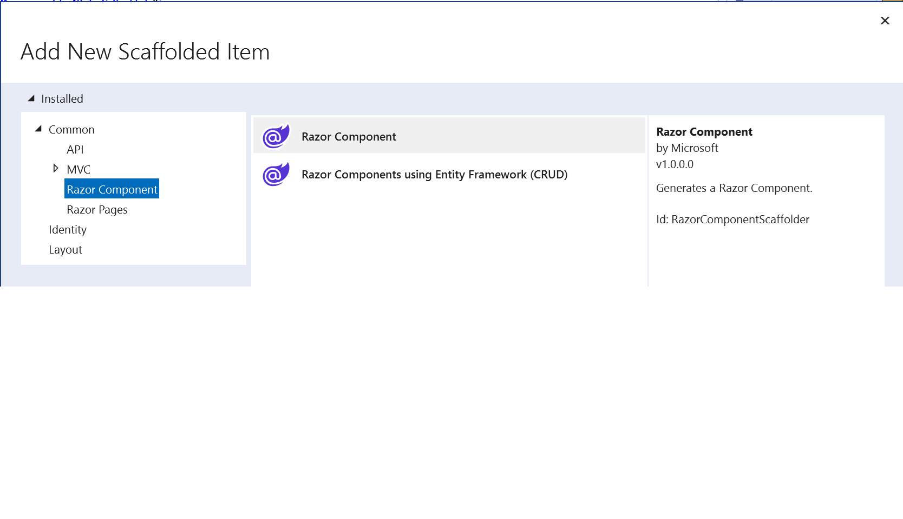
- From the popup window, complete the necessary settings:
- Template: CRUD (this provides Create, Read, Update and Delete functionality; in a real-world application, you might select only one or more options)
- Model Class: ConferenceSession, which refers to the Model Class created earlier
- DbContext Class: New/Add - accept the default name, or any other name of choice
- Database Provider: SQL Server
This will install the necessary Microsoft.EntityFrameworkCore Nuget Packages, creates the DBContext to interact with SQL Server, but - and this is rather cool - it will also create the necessary Razor Pages for the data model, including the CRUD action links.
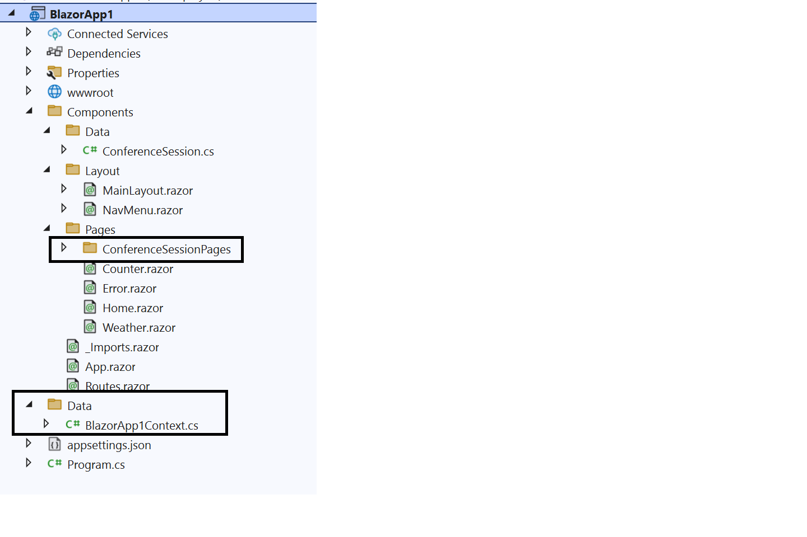
- Below the /ConferenceSessionPages subfolder, notice the different Create, Delete, Edit, Details and Index pages. Open the Create.razor page in the Visual Studio editor:
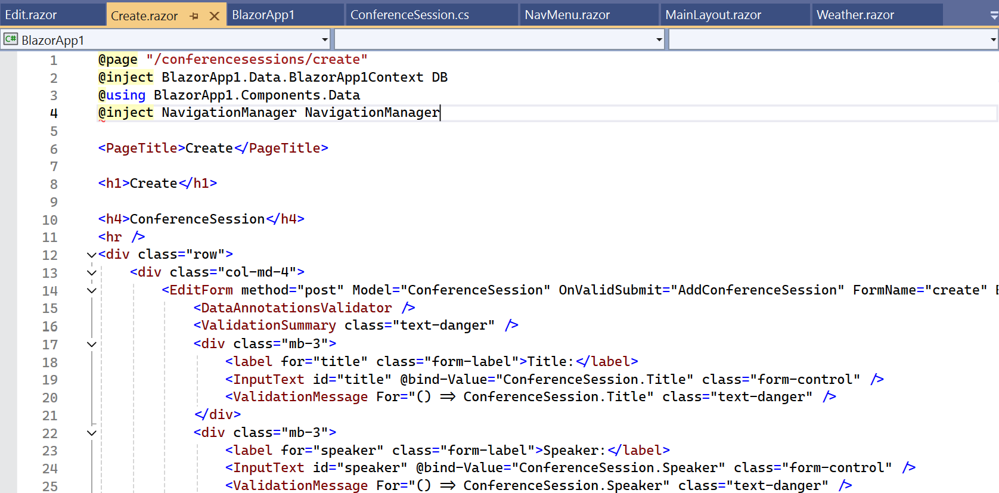
, and check the first couple of lines:
|
|
the @page directive, points to the URL address to use to connect to this page; the @inject refers at Dependency Injection, a capability of .NET to recognize ‘services’ such as Database interaction, Navigation Menu Manager, etc. the @using directive tells this page, to recognize the content of the Data folder within the project (where the ConferenceSession class model is created)
The next code block contains the HTML layout of the actual Conference Session items.
The last code block, in between the @code {} section, is the C# code allowing us to create new items, and interact with the SQL Server DB Context.
-
Open the Program.cs file; notice the builder.Services.AddDbContext lines of code, which refers at the SQL Server Database integration service. Also created as part of the Scaffolded Item wizard.
-
Before you can run the actual app, we need to initialize the actual database and Database context, for which we need to run some commandline actions. From the Visual Studio menu, select Tools / Nuget Package Manager Console.
run:
|
|
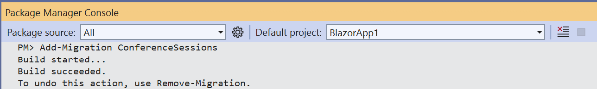
next, run:
|
|
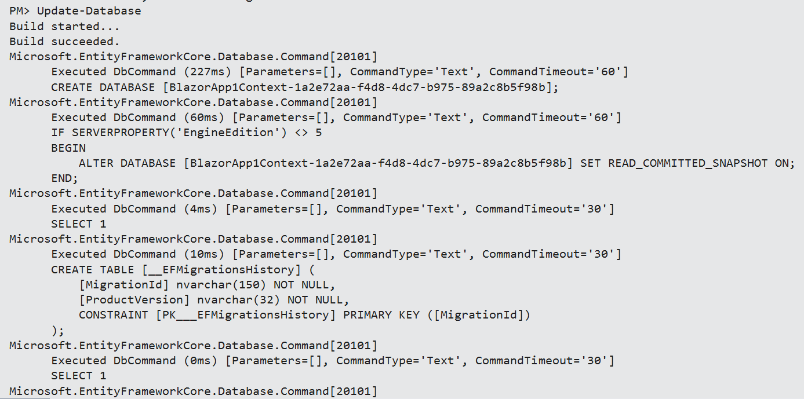
which recognizes our ConferenceSession.cs Model Class, and transforms it into SQL Query language.
- Let’s run the app again, and validate our ConferenceSession CRUD Pages. If you remember from the set of Pages created for us, one of them is the Index.razor, which has a @page directive of /conferencesessions. This means, if we browse to our app default URL, and add /conferencesessions, it will provide us with the ‘home page’ of the Conference Sessions. Let’s try that.
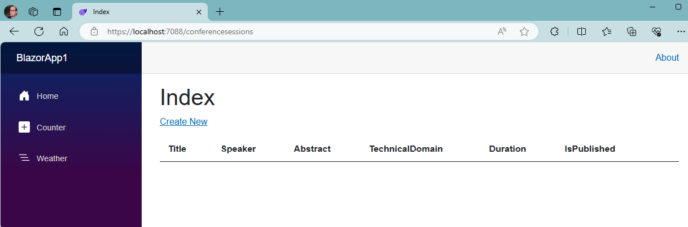
- Click the Create New link, which redirects you to the /conferencesessions/create page. Complete the fields and click ‘Create’ to save the record
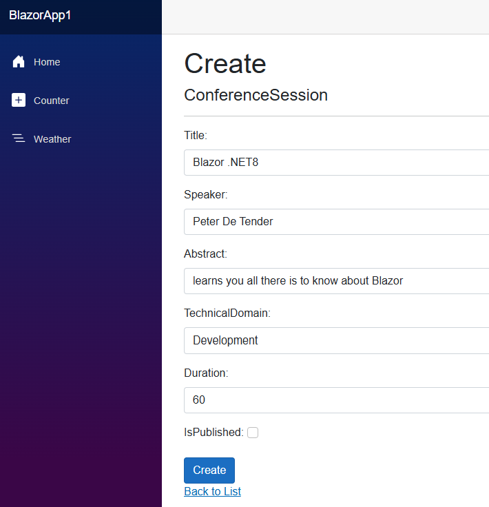
- With the new record saved, you get redirected back to the Index page; notice the line item is there, together with a few additional CRUD links to the side for Editing, Deleting and opening the Details of the item.
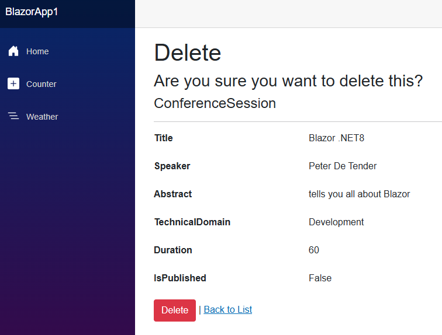
Wasn’t that cool? Think for a minute how powerful this is… from scratch to having a somewhat workable app ready in less than 20 minutes!
With the main parts of the app ‘ready’ (trust me, there is a lot more we can continue working on, which I might actually do in later continuing blog posts…), you might finish this process - which is not part of the MSTS Summit session because of time limits - and publish this to Azure Static Web Apps. the below steps should guide you through the process.
Publish Blazor Web Assembly app to Azure Static Web Apps
In this last section, I will show you how to publish this webapp to Azure Static Web Apps, a web hosting service in Azure for static web frameworks like Blazor, React, Vue and several other.
-
From the Azure Portal, create new resource / static web app
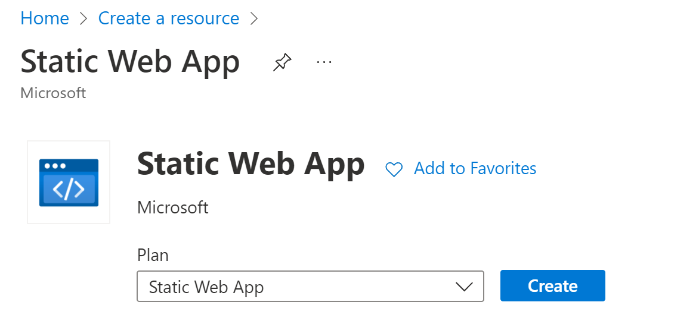
-
Provide base information for this deployment:
-
Resource group – any name of choice
-
Name of the app – any unique name for the app
-
Source = GitHub
-
Plan = Free
-
Region = any region of your choice
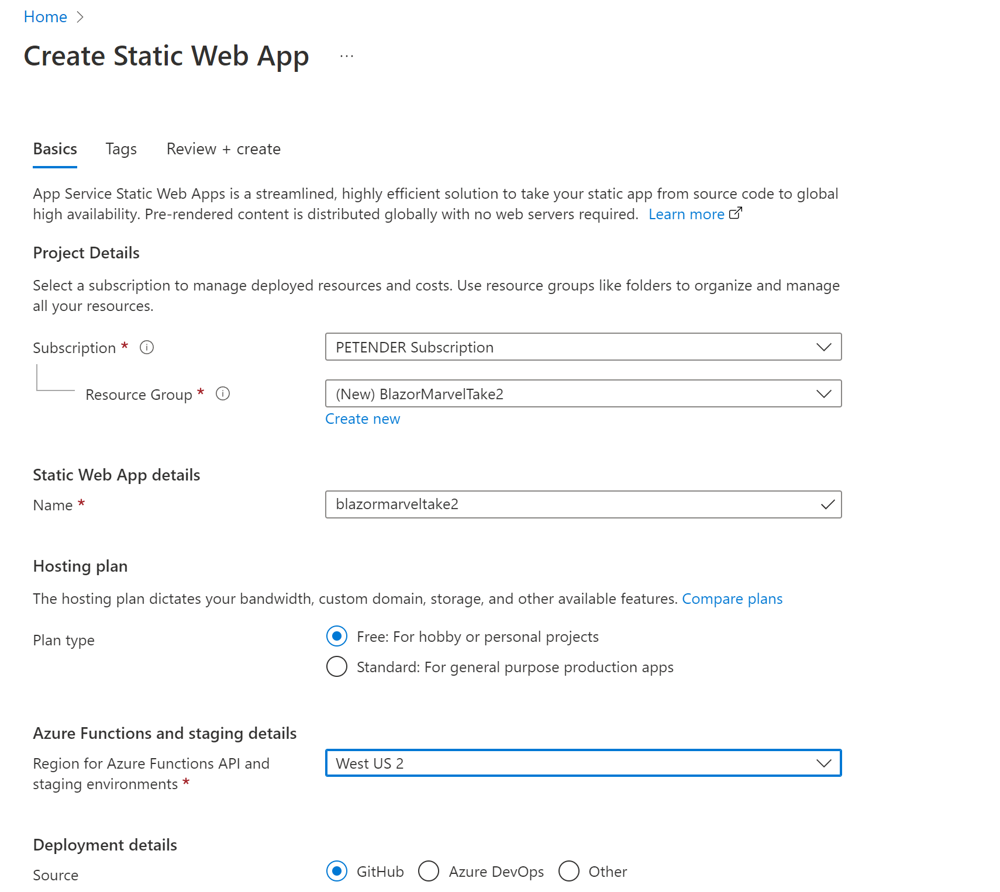
-
Scroll down and authenticate to GitHub; Next, select your source repo in Github where the code is stored (the one we just created)
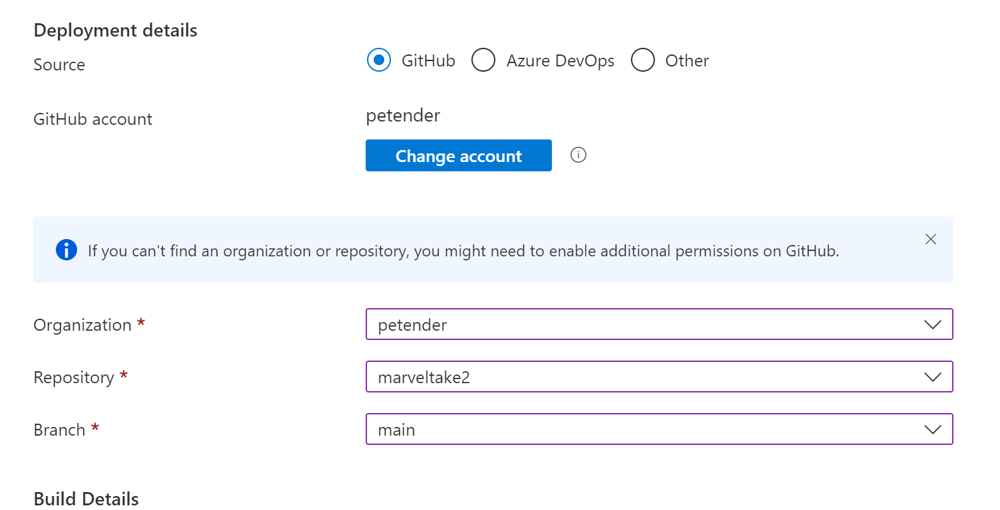
-
Click Build Details to provide more parameters regarding the Blazor app itself. Note you need to change the default App location from /Client to /, since our source code is in the root of the Blazor Web Assembly, without using ASP.Net hosted back-end.
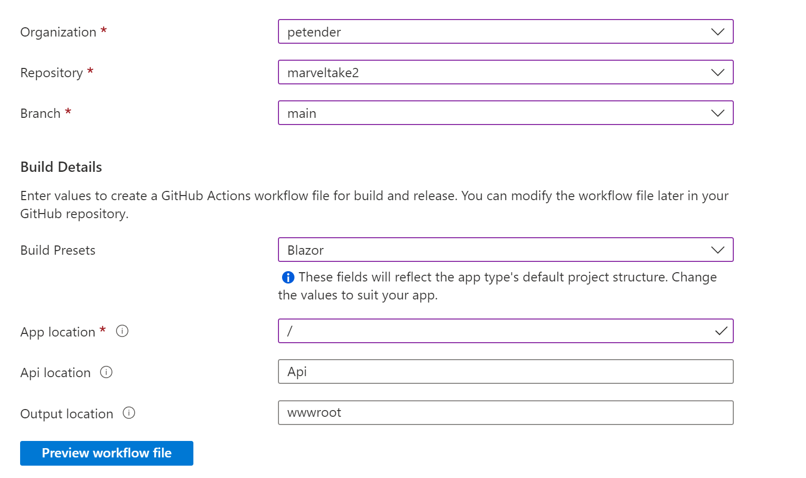
-
Once published, it will trigger a GitHub Actions pipeline to publish the actual content
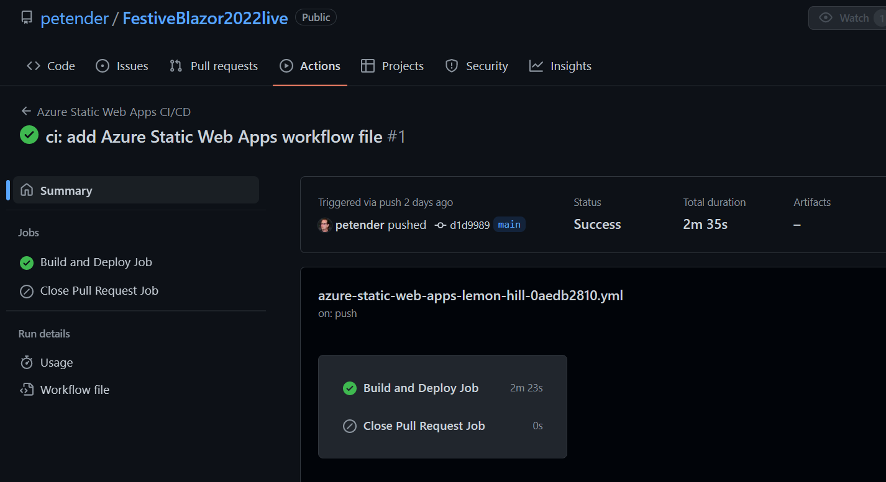
-
The YAML pipeline code is stored in the .github/workflows/ subfolder within the GitHub repository. You shouldn’t need to update this file though. It just works out-of-the-box.
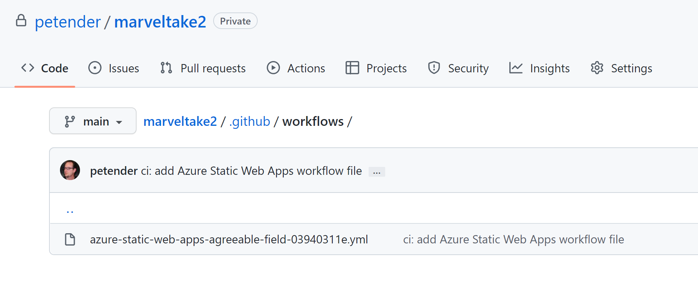
-
Check in Actions what’s happening:
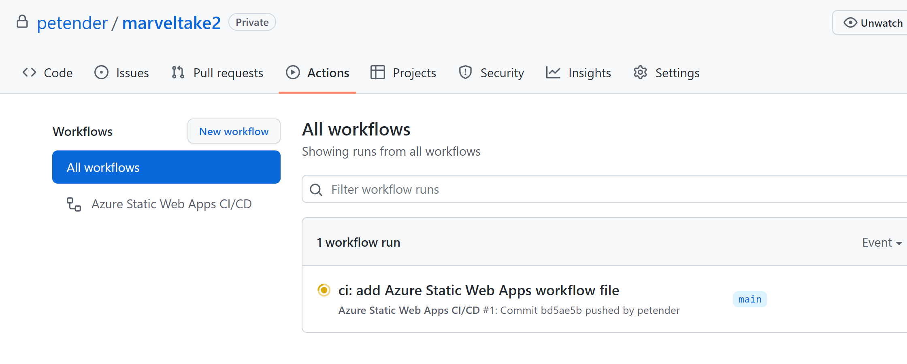
-
Open the details for the Build & Deploy workflow
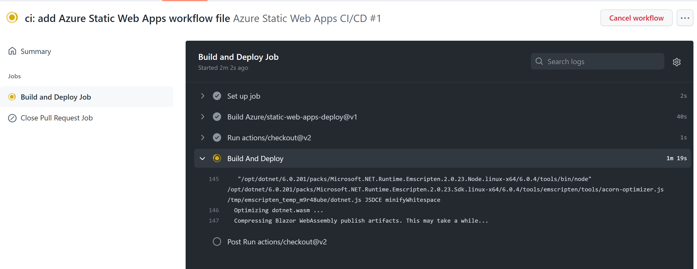
-
Selecting any step in the Action workflow will show more details:
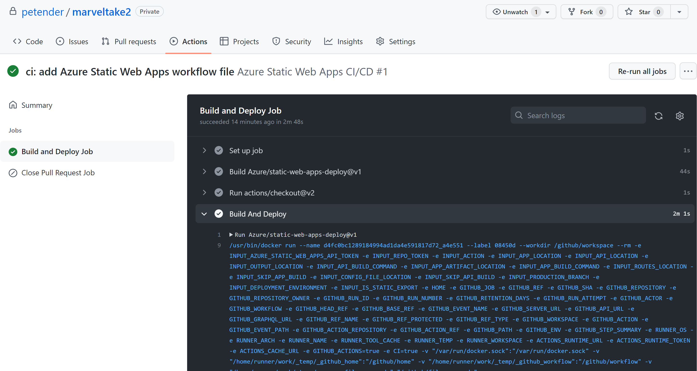
-
Wait for the workflow to complete successfully.
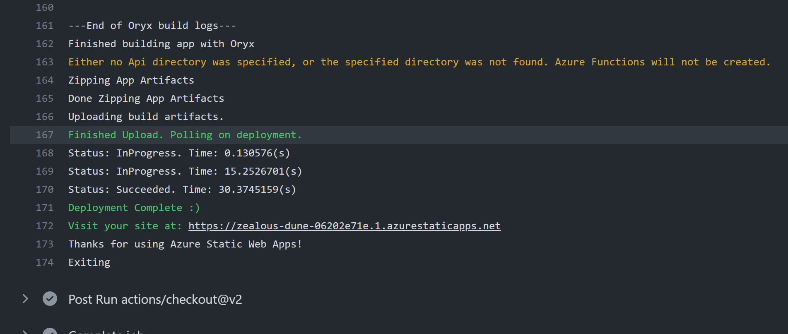
-
Navigate back to the Azure Static Web app, click it’s URL and see the Blazor Web App is running as expected.
Summary
In this article, I provided all the necessary steps to build a Blazor .NET 8 Web Server application. Started from the default template, you updated snippets of code to inject Components, and we also used the Scaffolded Item wizard to provide CRUD operations to a data model.
I would like to thank the organizing team of MS Tech Summit Poland 2024 for having accepted my session submission for the 3rd year in a row. Especially since this was my first attempt to do some (semi)live coding, to share my excitement of how I learned to write and build code at age 48. I’m already brainstorming on what Blazor app I can share in next year’s edition…
/Peter